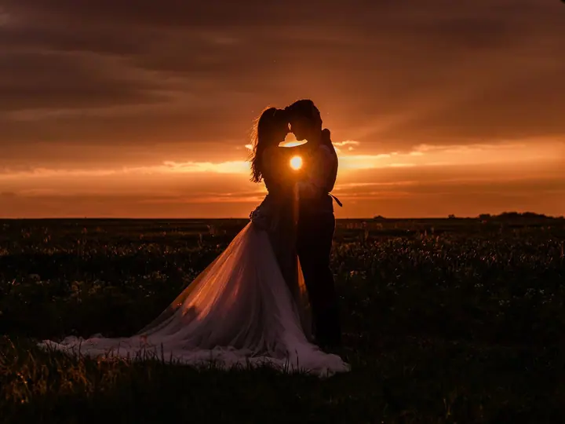
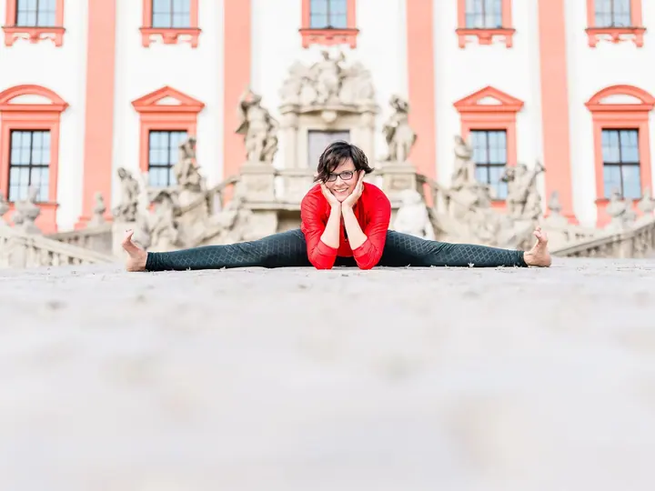

Svatby
Vaši svatbu nebudu narušovat ani vás nutit do pozic, které vám nejsou přirozené. Před svatbou se spolu nezávazně sejdeme a osobně se poznáme.

Jmenuji se Kateřina Arnoldová a fotím svatby, těhotenství a rodiny i jógu. Fotím v přirozeném světle, bez křečovitého pózování a s důrazem na autenticitu.
Rezervovat termínJsem svatební a lifestyle rodinná fotografka z Prahy. Fotím tady a teď, srdcem. Zajímají mě vaše emoce, světlo, jemnost a detaily, které vyprávějí váš příběh, nadčasově a bez zbytečné stylizace.


Svatební prostředí znám jako své boty. V minulých letech jsem realizovala několik stovek svatebních výzdob na menších i velkých svatbách, takže vím, kde bývají slabá místa a jak si s nimi poradit. Na svatbě se snažím být co nejméně nápadná, a když znejistíte, ráda vám pomůžu.
Mojí srdeční záležitostí je focení jógy. Fotím jógovou praxi i brandové fotky pro vaše podnikání a každý rok připravuji vánoční focení v krásně vyzdobených pražských ateliérech.
Co fotím
Vaši svatbu nebudu narušovat ani vás nutit do pozic, které vám nejsou přirozené. Před svatbou se spolu nezávazně sejdeme a osobně se poznáme.
Čekání na miminko i chvíle s těmi, které milujete. Na prvním místě je pro mě vaše přirozenost a ta nejčistší podoba vašich emocí.
Focení jógy je moje srdeční záležitost. Nafotím vaši praxi i brandové fotky pro vaše podnikání, v ateliéru i venku.
Zamilované chvíle s vaším partnerem, bez křečovitého pózování a v přirozeném světle. Hodí se i jako krátké mini focení.
Postup
Napište mi nebo zavolejte a vyberte si termín. U svatby se nejdřív nezávazně sejdeme, u menších focení termín potvrdím po zaplacení rezervačního poplatku.
Dostanete ode mě stylingové poradenství a tipy, co si obléct, aby vaše fotky vynikly. Před vánočním focením posílám i moodboard s inspirací.
Fotíme v klidu a v přirozeném světle. Nebudu vás nutit do pozic, které vám nejsou přirozené, ale poradím, kdykoli si nebudete vědět rady.
Z náhledů si vyberete fotografie, které vám upravím. Hotové je dostanete elektronicky nejpozději do týdne od výběru a uhrazení.
Otázky
Mini focení stojí 2 000 Kč a zahrnuje 15 upravených fotografií podle vašeho výběru, každá další je za 150 Kč. Svatby fotím od 11 000 Kč, vánoční focení v ateliéru stojí 3 900 Kč.
Upravené fotografie vám pošlu elektronicky nejpozději do týdne od vašeho výběru a uhrazení.
Vůbec ne. Fotím bez křečovitého pózování, a když bude potřeba, poradím vám, jak se postavit nebo kam dát ruce.
Termín je závazně rezervovaný po zaplacení rezervačního poplatku, u mini focení je to 500 Kč, u vánočního 1 000 Kč. Když vám standardní termíny nevyhovují, domluvíme se na jiném.
